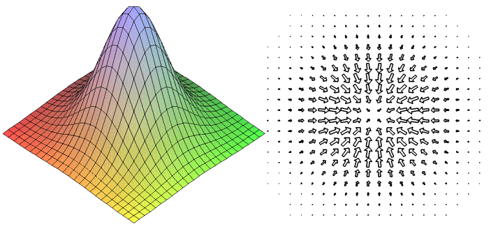

Московский Физико - Технический Институт
Лекции: в зуме по пятницам 12.20 - 13.45

О курсе
Осенний семестр охватывает выпуклый анализ, математическое программирование, являясь, в основном, глубоким теоретическим введением в мир оптимизации. Весенний семестр ориентируется на алгоритмы и предполагает плотную практическую работу. Актуальные новости о курсе рассылаются в телеграм чате.
Лектор курса: профессор, д.ф.-м.н. Александр Владимирович Гасников
Материалы курса
Все материалы курса будут выкладываться по мере готовности на этот сайт. Для ознакомления доступны лекции Гасникова А.В. в Кавказском Математическом Центре.
Лекции читаются по пособию, актуальная версия которого находится на архиве.
[1] Воронцова Е.А., Гасников А.В., Хильдебранд Р., Стонякин Ф.С. Современные численные методы оптимизации. Выпуклый анализ. М.: МФТИ, 2011
[2] Гасников А.В. Универсальный градиентный спуск. М.: МЦНМО, 2020
|
📄 |
🎥 |
| Введение в численные методы выпуклой оптимизации. Градиентный спуск, ускоренный градиентный спуск, метод Чебышёва, метод сопряженных градиентов. (см. [1], п. 2.4) |
🙅♀️ |
🙅♀️ |
| Градиентный спуск для задач невыпуклой оптимизации. Условие Поляка-Лоясиевича. Нижние оценки для градиентных методов на классе гладких выпуклых задач. (см. [2], параграф 1, упражнение 1.3)
|
🙅♀️ |
video |
| Методы решения малоразмерных задач выпуклой оптимизации. Метод центров тяжести, эллипсоидов. (см. [2] упражнение 1.4 и [1], п. 2.3 ) |
🙅♀️ |
video |
| Негладкая оптимизация. Субградиентный метод. Неточный оракул. (см. [2] первая половина параграфа 2, упражнения 2.1, 2.2, 2.6) |
🙅♀️ |
video |
| Методы проекции градиента. Композитная оптимизация. Введение стохастическую оптимизацию. Минимизация квадратчиной формы на симплексе рандомизированным методом. (см. [2] вторая половина параграфа 2, параграф 3 в части композитной оптимизации и замечание 5.2)
|
🙅♀️ |
video |
| Стохастический градиентый спуск. Сходимость в условиях интерполируемости (см. начало статьи
https://arxiv.org/pdf/1907.04232.pdf и формулировки результатов их статьи http://proceedings.mlr.press/v89/vaswani19a/vaswani19a.pdf)
|
.pdf |
video |
| Оптимальные методы решения гладких и негладких выпуклых и сильно выпуклых задач оптимизации. Метод рестартов и регуляризации. Приводятся таблички, резюмирующие основные результаты, полученные в предыдущих лекциях (см. [1], п. 2.1 и [1], замечание 4.1, конец параграфа 5 и начало Приложения) |
.pdf |
video |
Экзаменационная программа представлена ниже:
- Понятие о численных методах оптимизации. Сильно выпуклые задачи, выпуклые (вырожденные) задачи, невыпуклые задачи. Гладкие, негладкие задачи.
- Регуляризация и рестарты. Привести примеры!
- Метод градиентного спуска. Выпуклые задачи. Невыпуклые задачи (сходимость к локальному экстремуму).
- Невыпуклая оптимизация. Примеры трудных задач невыпуклой оптимизации.
- Условие Поляка-Лоясиевича (ПЛ) и глобальная сходимость градиентного спуска для невыпуклых задач, целевая функция которых удовлетворяет условию (ПЛ). Как изменятся оценки скорости сходимости, если градиент доступен с аддитивным шумом в концепции относительной точности? Сведение решение системы нелинейных уравнений к задаче оптимизации с условием (ПЛ).
- Двойственная задача. Слабая и сильная двойственность для задач выпуклой оптимизации. Теорема о минмаксе (Фон Неймана, Сион-Какутани) (без доказательства). Понятие о прямо-двойственных методах на примере решение задачи минимизации выпуклого сепарабельного функционала с аффинными ограничениями с помощью перехода к двойственной задаче и ее решения методом градиентного спуска.
- Унимодальные функции одной переменной. Методы одномерной минимизации (метод дихотомии, метод золотого сечения). Задача о распределении ресурсов.
- Методы маломерной оптимизации: метод центров тяжести, метод эллипсоидов.
- Способы выбора шага в методах. Наискорейший спуск. Адаптивный способ выбора шага.
- Сопряженные направления. Метод сопряженных градиентов для минимизации квадратичных функций. Метод сопряженных градиентов для решения задач выпуклой оптимизации.
- Метод тяжелого шарика Поляка. Метод Чебышева. Ускоренный градиентный метод (метод подобных треугольников).
- Задачи оптимизации на множествах простой структуры. Дивергенция Брэгмана. Метод проекции (суб-)градиента, метод зеркального спуска.
- Метод условного градиента (Франк-Вульфа). Пример задачи минимизации квадратичной формы с разреженной положительно определенной матрицей на единичном симплексе.
- Композитная оптимизация. Пример Tomogravity model.
- Универсальный градиентный спуск.
- Проксимальный градиентный спуск. Ускоренный проксимальный метод. Каталист - общий способ ускорения различных неускоренных методов.
- Метод Ньютона. Окрестность квадратичной скорости сходимости. Понятие о квазиньютоновских методах (LBFGS).
- Стохастическая оптимизация. Минибатчинг и распараллеливание.
- Рандомизированные методы. Минимизация квадратичной формы на симплексе. Покомпонентные методы.
- Задача минимизации суммы функций.
- Методы внутренней точки.
- Понятие самосогласованного барьера. Методы параметризации целевых функций. Методы отслеживания центральной траектории